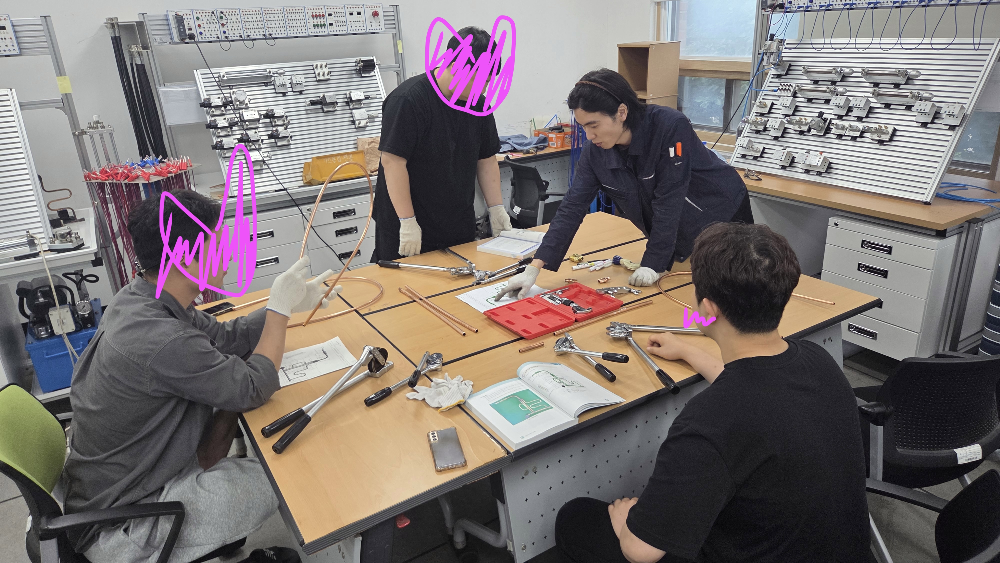

오늘 CAD 실습 시간에 오토캐드 첫 과제를 했다. 아직까지 할 만한 듯
색안경이란 얼마나 편협한가
배우고, 만들고, 살아가는 날들의 기록.
조금씩 배우고,
직접 만들며 기록합니다.
용접부터 배관, 전기제어까지.
시행착오도 하나의 기록으로.
라두이노 HVAC 만들기 첫 걸음
2026년의 기록을 시간순으로 만나보세요.
평범한 날들도 모이면 나만의 이야기가 됩니다.
색안경이란 얼마나 편협한가
제에에에ㅔㅔㅔㅔ발 내일 누수 안 나게 해주세요
치수 오차, 누수, 탈락6
치수 오차, 누수 없음, 통과
오전 오작, 치수 오류, 누수, 탈락4
오후 치수 오류로 오작, 누수 없음, 탈락5
라두이노 HVAC 만들기 첫 걸음
치수 오류, 누수, 탈락3
치수 오류, 누수, 탈락2


공조산기 작업형 준비하기
치수 오류, 누수, 탈락
치수 못 맞춰서 이 모양ㅋㅋㅋㅋㅋㅋㅋㅋㅋㅋㅋㅋㅋㅋㅋㅋ
공조산기 실기 갈 길이 멀멀다
아... 힘들다...


전기제어실습 PB1을 눌렀는데 모터는 작동했으나 자기유지 실패...
3주만에 용접 실습, 연습을 거듭할수록 비드물이 고이는 상태가 보이기 시작했다.
공조냉동기계 산업기사, 산업안전 산업기사 취득 후 내년에 용접기능사 취득 하자

검도 1급을 향해

오늘 설비실습 시간에 배관 30분 여유 남기고 만들었지만 길이가 안 맞아서
점수가 까였다... 중간고사 끝나고 다시 나사산 깎을 예정...


용접 너어어어어는 진짜아아아아아

설비기초 실습 연습, 3시간 동안 파이프 도면을 완성하지 못했다.
알아둘 점
1. 엘보 이경티 사이 파이프 길이 + 3mm
2. 파이프 양 끝 한 쪽은 나사산 2개 남기고 다른 한 쪽은 3개 남길 것


설비기초 실습 시간, 2시간 제한 시간 안에 엘보와 이경티가 결합된 파이프를 만들지 못했다.
오후 1시간 공강 때 한 번 더 만들었으나 어째서인지 치수가 잘 안 맞는다.
명심해야 할 점
1. 밀링 선반 마다 나사 구경 차이가 있으므로 정사이즈보다 살짝 더 올려서 나사산을 깎을 것
2. 엘보와 이경티 내경 차이가 있을 수 있으므로 최대한 맞는 배관 부속을 찾을 것
3. 기칠운삼


용접: 조질게~

마지막 참인 폴리텍 시간, A4 용지로 롤러코스터를 만들었다.
탁구공이 책상까지 내려오는데 6초 남짓. 야매로 만들었지만 집단 지성의 힘을 보았다.

설비 실습 시간 25A 3/4/5/6cm 나사산 파이프를 만들었다.
엘보 이음쇠에 잘 들어갔다. 실습 시간은 생각하고 행동하는 것이 중요.


"수많은 작은 유향 방울들이 동일한 제단 위에 떨어진다. 어떤 것들은 거기에 먼저 도착하고, 어떤 것들은 나중에
도착하지만, 차이는 없다." -마르쿠스 아우렐리우스-


두번째 아크 용접 실습 생각보다 섬세한 손놀림이 필요해서 쉽지 않다.
하지만 계속 연습하다 보면 때깔 좀 나겠지. 전기 제어 실습도 집중해서 수업에 참여했다.
그리고 오늘 아침에 학교 식당에서 교수님이 수줍게 인사하셔서 너무 귀여우셨다는ㅋㅋㅋ

오늘 CAD 실습 시간에 오토캐드 첫 과제를 했다. 아직까지 할 만한 듯
오늘 동아리 활동 신청하려 했으나 학과장교수님의 현장 실습에 참여 예정이라
자격증 공부 + 동아리 활동까지 하기엔 집중이 분산될 것 같아 신청하지 않았다.
그리고 한양대학교 졸업생 평균 자격증 취득 개수가 기사 자격증 3개라는 말에 전의를 상실했다.
난 어떻게 살아가야하나?
오늘 처음 용접 실습을 했다. 아크 발생시키는게 너무 빡세다.
남들은 아크 잘 일으키는데 나만 안 됨. 그래도 용접 실습이 제일 흥미롭다.


더블쿼터파운더치즈 with BBQ

오늘 용접 실습에 실습에 의한 실습을 위해 산 작업복과 안전화가 왔다.
자 이제 시작이야 내 꿈을 위한 여행 피카츄

하 씨발... 개인 사이트 만들기 졸라 빡세네
앞으로 어떻게 해야할지 막막하다...
오늘은 나만의 블로그를 꾸미기 시작했다.
GitHub Pages 404를 해결했다. 존1나게 뿌듯하다.
용접, 설비, 전기제어 실습의 시행착오부터
검도와 소소한 일상까지.